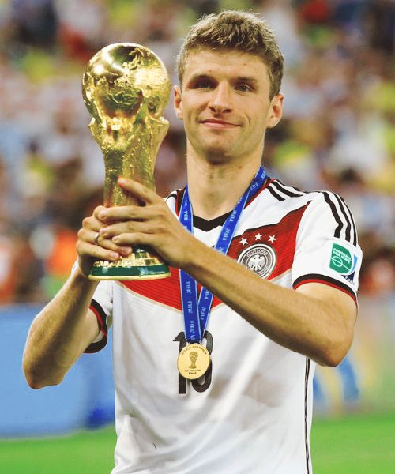
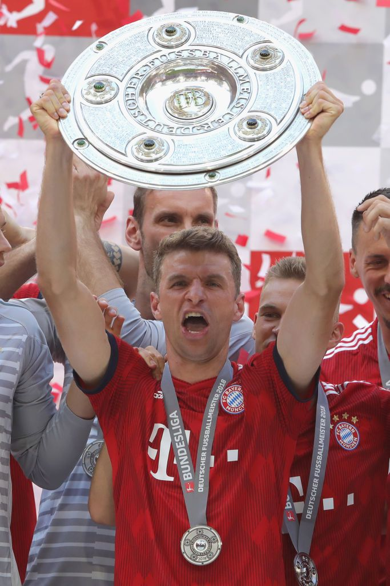

Thomas Müller made his debut for Bayern Munich’s first team on August 15, 2008, during a match against Hamburger SV in the Bundesliga.

Muller scores his first goal for Bayern agaisnt bitter rivals BVB

Muller wins Golden boot in the 2010 FIFA World Cup.

Thomas plays a pivotal part in Bayern's historic 2013 success, in which they won the three major competitions they competed in that year.
That included the UEFA Champions League in 2013. The first of his two successes in the compettition.
Muller scored 5 goals en route to helping Germany lift the FIFA World Cup for the 4th time in its history.
Muller contintued his success at club level with 8 Bundesliga titles by 2018

Bayern's second ever treble and first ever sextuple, Mullered was instrumental in helping his team win every single compettition they entered in 2020

In 2024, Muller broke the record for most apperances for an outfield player for Bayern Munich.